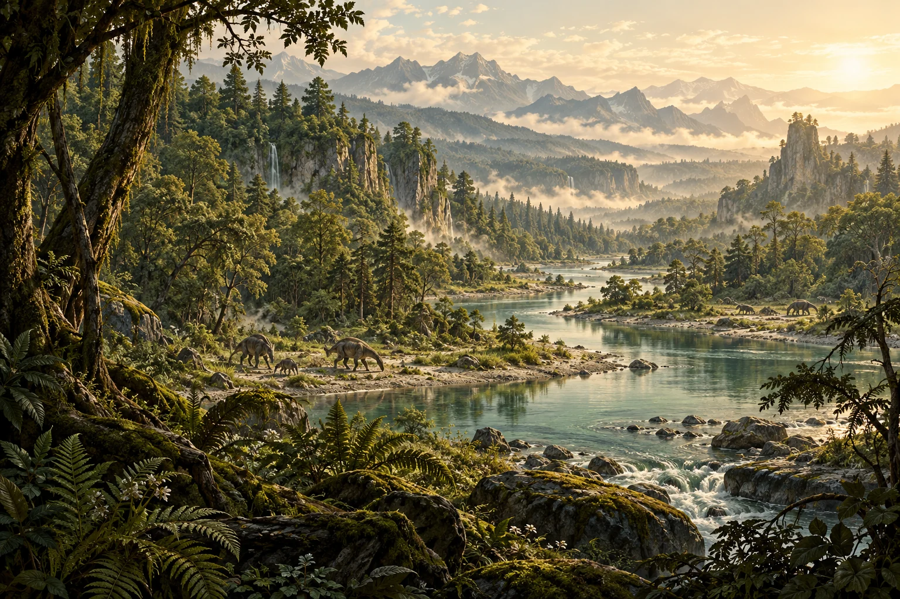
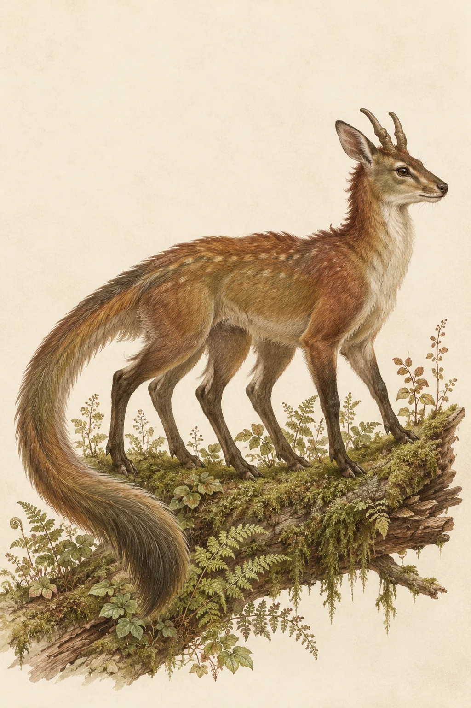

Le vivant se transforme
Génétique, reproduction, prédation : les pressions du monde façonnent ses populations.

ÉCOSYSTÈMES · ÉVOLUTION · MONDE PARTAGÉ
Un moteur d’écosystème et d’évolution. Un même monde vivant, que chaque jeu explore à sa façon.
01 / LE PROJET
Dans Orvane, chaque espèce a une place.
Et chaque action peut déplacer l’équilibre.
Les lignées naissent, se nourrissent, se chassent et migrent. Au fil des générations, elles mutent et se séparent en espèces nouvelles. Leur évolution se construit dans la simulation.
Les jeux lisent ce monde et le rendent jouable. En retour, leurs joueurs y laissent une empreinte : rencontres, chasse, apprivoisement… Le cycle suivant en tient compte.
Génétique, reproduction, prédation : les pressions du monde façonnent ses populations.
Une évolution dans le monde commun peut se retrouver dans tous les jeux qui y sont branchés.
Un tampon amortit les pressions et leur restitution. Votre jeu garde son rythme et son équilibre.

02 / LES MILIEUX
24 biomes, autant de façons de survivre. Le climat, les ressources et les voisins changent les règles du vivant.
Une population migre, s’isole ou s’adapte. D’un milieu à l’autre, son histoire se ramifie.

Étude d’univers — interprétation artistique, non issue du moteur.
03 / LA MÉMOIRE DU MONDE
Une espèce trop chassée ne revient pas toujours comme avant.
Elle peut se raréfier. Les populations apprennent la méfiance. Si les joueurs prélèvent surtout les plus grands individus, la taille moyenne peut diminuer au fil des générations.
La chasse n’accorde pas de bonus automatique. Ce sont les individus qui survivent et se reproduisent qui écrivent la suite.
Un seul jeu ne représente jamais plus de la moitié de la pression sur une espèce.
Observer les lignées04 / POUR LES DÉVELOPPEURS
Survie, exploration ou monde paisible : votre traducteur adapte Orvane aux règles et aux créatures de votre jeu.
Recevez sa clé publique et sa clé d’administration.
Récupérez l’instantané JSON publié chaque nuit.
Voir l’instantanéReliez les biomes, les populations et les traits à votre gameplay.
Transmettez des comptes bruts. Le tampon régule leur influence.
Premier jeu branché : Stone Valley.
Son traducteur complet sert d’exemple pour construire le vôtre.